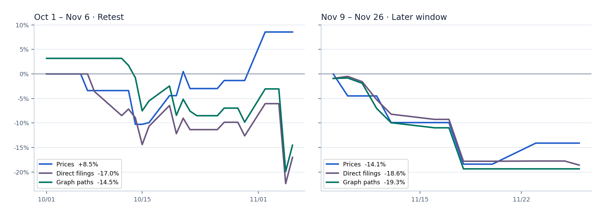

시점 검증 계약 경로 전략 — OpenDART 지식그래프로 본 주가 방향 예측과 하락장 매매
초록. 거래 상대의 공시를 함께 보면 주가 방향을 더 잘 맞히고 하락장 손실을 줄일 수 있을까요? 2026년 10월 1일~11월 26일 39거래일 · 659개 종목·거래일을 분석한 결과, 거래 경로 모형의 정확도는 직접 공시 모형보다 0.15%p 낮았습니다. 당일 매매의 비용 후 누적수익률은 네 모형 중 가격 모형이 가장 높았습니다. 같은 기간 삼성전자와 SK하이닉스의 보유 상태를 바꾼 별도 실험에서 비용 후 수익률은 시점 검증 계약 경로 전략 −5.26%, 가격 추세 −7.69%, 매수 후 보유 −38.01%였습니다. 최종 규칙은 같은 구간의 공시 사례를 살펴본 뒤 정했습니다.
1. 서론
기업의 주가를 예측할 때 그 기업이 낸 공시만 읽으면 거래 상대가 공개한 정보를 놓칠 수 있습니다. 공급계약으로 관계가 확인된 상대 기업의 공시를 추가했을 때, 같은 종목과 날짜에서 예측 정확도와 비용 후 성과가 좋아지는지 조사했습니다. 삼성전자와 SK하이닉스도 같은 모형과 기준으로 평가했습니다.
방향 예측은 한 거래일의 상승 여부를 채점합니다. 손익은 보유 기간, 시가 체결, 비용에 따라 달라집니다. 하락장 전략을 같은 두 종목을 계속 보유했을 때와 비교해 손실을 얼마나 줄였는지 봤습니다. 가격 추세만 따른 경우와도 비교해 계약 경로 때문에 어떤 주문이 바뀌었는지 확인했습니다.
2. 관련 연구
이 글에서 참고한 주가 예측 연구는 과거 그래프에서 얻은 규칙으로 탐색하고 뉴스에 닿는 경로를 평가합니다. 이번 계약 경로는 정해진 1홉 규칙을 실행하며 탐색 지침 학습이나 LLM 재순위화는 포함하지 않습니다. 이번에는 공개 시점과 원문 근거를 유지하는 원칙을 적용했습니다. 비교를 쉽게 해석할 수 있도록 기간이 확인되는 거래 관계와 로지스틱 회귀를 사용했습니다. 시장, 예측 수익률 구간, 모형이 달라 논문의 성능 수치와 직접 비교하기는 어렵습니다. Ding 외, TRACE (2026)
기업 관계를 시계열 주가 모형의 입력으로 쓴 연구와, 공시 사건 주변의 수익률을 비교하는 사건 연구를 참고했습니다. 이번 실험의 목적은 관계를 추가했을 때의 예측 성능 측정입니다. Feng 외, Temporal Relational Ranking · MacKinlay, Event Studies in Economics and Finance
주가 예측 TRACE에서 비교할 절차는 과거 경로의 규칙 채굴, 빔 탐색, 평가 시작일의 종목 선정입니다. 이 연구의 계약 경로는 고정 1홉을 검사하고 매 거래일 기존 포지션을 유지하거나 전환합니다. 고객–공급사 연결을 통한 정보 전달과 과거 수익률의 부호를 쓰는 시계열 추세를 각각 참고했습니다. Cohen·Frazzini, Economic Links and Predictable Returns · Moskowitz 외, Time Series Momentum
3. 데이터와 시점
EC2의 Neo4j에서 공급계약 1,294건, 계약 조건 정정 83건, 시설투자 발표 37건, 매출·영업이익 관측값 2,160개를 조회했습니다. 구매자가 확인된 계약은 226건입니다. 적재 범위는 2026년 1월 1일~11월 26일의 코스피·코스닥·코넥스 대상 공시입니다. 시세는 네이버 일봉을 사용했고, 거래 이력과 기업 식별이 맞는 종목·거래일만 평가했습니다. 경제 사건 그래프와 원문 검증
기업은 OpenDART 법인코드로 연결하고 시세·주문은 상장 종목코드로 대응시킵니다. 접수번호는 계약 원공시와 정정 원문을 식별합니다. 각 거래일에는 그때까지 공개된 계약 조건만 적용합니다. 공개 시각을 알 수 없는 공시는 다음 거래일 시가부터 반영합니다. 그날 시가와 종가는 체결가와 성과를 계산할 때 씁니다.
실험 A 표본과 목표. 423종목의 659개 종목·거래일에서 당일 시가 대비 종가가 상승했는지를 평가합니다. 실험 B 표본과 목표. 삼성전자·SK하이닉스 각 39거래일에서 주식 또는 현금으로 보유 상태를 결정하고 포트폴리오 비용 후 누적수익률을 비교합니다.

4. 방법론
시점 검증 계약 경로 전략
- 공급사 → 계약 → 구매자 경로를 회사 간 경제적 1홉으로 정의합니다.
- 새 공시보다 먼저 공개된 유효 계약 중에서 방향, 같은 제품군, 양수인 기존 금액, 서로 다른 접수번호, 같은 구매자를 모두 확인합니다. 당시 조건이 충돌하면 제외합니다.
- 거래일 t까지 이용 가능한 5거래일의 적격 공시 e에 대해
S(i,t) = Σ sign(e)를 계산합니다. 신규 계약과 증액은 +1, 감액은 −1, 변동 없음과 비교 불가는 0입니다. M(i,t) = 1[C(i,t−1) > C(i,t−21)]을 추세 기준으로 둡니다. 목표 보유 상태는 S가 양수면 1, 음수면 0, 0이면 M입니다.- 목표가 바뀌면 시가 O에 주문합니다. 편도 비용 f=0.001에서 매수 수량은
현금 / (O × (1+f)), 매도 수취액은수량 × O × (1−f)입니다. 최종일 잔여 주식은 종가로 청산합니다. 두 종목 계정의 합산 자산을 W로 두고순수익률 = W(마지막) / W(초기) − 1을 구합니다.
어떤 정보가 예측에 들어갔나
| 모형 | 어떤 정보를 쓰나 | 예시 |
|---|---|---|
| 가격 | 직전 거래일까지의 1·5·20거래일 수익률과 최근 거래량을 봅니다. | 삼성전자 주가의 최근 흐름과 거래량을 확인합니다. |
| 가격 + 직접 공시 | 가격 정보에 예측 대상 기업이 낸 공급계약·정정·시설투자·실적 공시 건수와 계약 규모·예정 투자액을 더합니다. | 삼성전자가 직접 공시한 시설투자를 반영합니다. |
| 가격 + 직접 공시 + 계약 역할 | 직접 공시까지 사용하고, 해당 기업이 다른 회사의 공시에서 구매자로 언급됐는지와 확인된 거래 상대 수를 더합니다. | 넥스틴의 신규 계약에서 SK하이닉스가 구매자였다는 사실을 반영합니다. |
| 가격 + 직접 공시 + 거래 경로 | 계약 역할까지 사용하고, 이미 공개돼 유효한 계약을 따라 거래 상대 기업의 공급계약·정정·시설투자·실적 공시를 더합니다. | 기존 계약으로 연결된 공급사가 새 실적 공시를 내면 구매자 예측에도 그 공시 여부를 반영합니다. |
매출과 영업이익이 같은 실적 공시에 들어 있으면 공시 한 건으로 셉니다.
실험 A. 당일 시가 대비 종가의 상승 확률
예측 질문. 개별 종목의 종가가 같은 날 시가보다 높을까? 평가 단위는 종목 하나와 거래일 하루입니다. 시가 100에서 종가 101이면 상승, 종가 100 이하이면 비상승입니다. 직전 거래일까지의 가격·거래량과 예측 시점에 공개된 공시로 확률을 계산하고 50% 이상을 상승으로 분류합니다. 예측일의 시가와 종가는 정답 산출에 사용합니다. 확률을 이용한 당일 매매는 시가 진입과 당일 종가 청산으로 별도 평가합니다.
예측할 거래일이 t라면, 입력값은 직전 거래일 t−1의 장 마감까지 계산합니다. C는 종가, V는 거래량이며 아래 날짜의 차이는 거래일 수입니다.
- 1·5·20거래일 수익률
-
· 직전 종가가 1일, 5일, 20일 전 종가보다 얼마나 변했는지 각각 계산합니다.
- 상대 거래량
-
는 t−21부터 t−2까지의 20거래일 평균 거래량입니다. 직전 거래량을 그 직전까지의 20거래일 평균과 비교합니다. 평균에는 t−1을 포함하지 않습니다.
- 정답을 붙입니다. 과거 각 종목·거래일의 실제 수익률 로 상승 여부를 정합니다. O는 시가이고, 이면 상승(1), 그 외는 비상승(0)입니다.
- 가중치를 학습합니다. 각 입력값을 학습 자료의 평균과 표준편차로 처럼 표준화합니다. 로지스틱 회귀는 상승 확률이 실제 상승 여부와 맞도록 가중치 w와 절편 b를 학습합니다. L2 규제로 큰 가중치에 벌점을 주고 검증셋에서 강도를 고릅니다.
- 상승 확률을 구합니다. , 로 계산합니다. 예를 들어 설명용 점수 라면 상승 확률은 약 58%이고, 기준인 50% 이상이므로 상승으로 분류합니다.
가격 모형은 위 네 변수만 사용합니다. 직접 공시 모형은 같은 입력에 해당 기업의 공시 변수를 더하고, 계약 역할과 거래 경로 모형은 거래 관계 변수를 차례로 추가합니다. 각 모형은 같은 종목·거래일에서 동일한 학습 절차로 가중치를 따로 구합니다. 거래일 t의 시가와 종가는 실제 수익률을 계산할 때 사용합니다.
새 공시가 공개된 날짜보다 앞선 계약만 거래 경로에 사용했습니다. 계약 시작·종료일은 그 시점에 알려진 값을 적용했고, 같은 공개일에 조건이 충돌하면 해당 계약을 경로에서 제외했습니다. 시설투자를 특정 공급계약에 귀속하려면 원문에 직접 근거가 필요합니다.
비교 단위는 모든 모형에서 같은 종목·거래일입니다. 공시 기업과 공급계약 당사자가 기본 후보이며, 삼성전자(005930)와 SK하이닉스(000660)는 공시가 없는 거래일도 넣었습니다. 다음 거래일 시가에 진입해 종가까지의 수익률을 예측합니다. 0%는 비상승으로 분류했습니다.
| 구간 | 2026년 기간 | 거래일 | 종목·거래일 | 종목 | 상승 |
|---|---|---|---|---|---|
| 학습 | 1월~6월 | 120 | 1334 | 555 | 530 |
| 검증 | 7월~8월 | 42 | 605 | 396 | 242 |
| 테스트 | 10월 1일~11월 26일 | 39 | 659 | 423 | 284 |
규제 강도는 7~8월 검증 구간의 균형 정확도로 골랐습니다. 모형은 1~8월 자료로 학습한 뒤 10월 1일~11월 26일 테스트셋 전체에 고정해 적용했습니다. 9월은 분할에서 제외했습니다. 11월 6일 공시는 다음 거래일인 11월 9일의 예측에 반영했습니다.
5. 실험 결과
실험 A. 방향 예측
가격과 직접 공시를 쓰는 모형에 거래 경로를 추가했을 때 정확도는 56.30%에서 56.15%로 내려갔습니다. 차이는 −0.15%p였고, 거래일 단위 재표집 95% 구간은 −1.66~+1.71%p였습니다.
상승 확률이 0.5 이상인 종목을 시가에 동일가중 매수하고 종가에 청산하는 규칙을 비교했습니다. 아래 수익률은 왕복 비용 20bp를 공제한 누적수익률입니다. 거래가 없는 날은 수익률 0으로 처리했습니다. 샤프는 무위험수익률 0과 연 252거래일을 기준으로 계산했습니다.
| 모형 | 정확도 | 균형 정확도 | 상승 F1 | 진입 건수 | 순수익률 | 샤프 | 최대낙폭 |
|---|---|---|---|---|---|---|---|
| 가격 | 56.90% | 50.43% | 6.58% | 20 | −5.98% | −0.51 | −18.38% |
| 가격 + 직접 공시 | 56.30% | 50.75% | 17.24% | 64 | −31.78% | −3.31 | −31.78% |
| 가격 + 직접 공시 + 계약 역할 | 56.30% | 50.45% | 13.77% | 50 | −31.34% | −3.33 | −33.46% |
| 가격 + 직접 공시 + 거래 경로 | 56.15% | 50.27% | 13.21% | 49 | −29.83% | −3.12 | −31.99% |

비상승만 예측한 기준선의 정확도는 56.90%였습니다. 별도로 보존한 초기 실험 기록
삼성전자와 SK하이닉스
모형별 셀은 방향을 맞힌 거래일 / 평가 거래일 · 비용 후 누적수익률입니다. 자체 공시와 관계를 통한 공시가 같은 거래일에 겹칠 수 있습니다.
| 종목 | 거래일 | 자체 공시 일수 | 구매자 노출 일수 | 거래 상대 공시 일수 | 가격 | 가격 + 직접 공시 | 가격 + 직접 공시 + 계약 역할 | 가격 + 직접 공시 + 거래 경로 |
|---|---|---|---|---|---|---|---|---|
| 삼성전자 | 39 | 2 | 8 | 15 | 25/39 · +0.73% | 25/39 · +10.43% | 26/39 · +3.55% | 26/39 · +3.55% |
| SK하이닉스 | 39 | 1 | 6 | 7 | 20/39 · −2.14% | 17/39 · −8.16% | 18/39 · −4.90% | 18/39 · −4.90% |
실험 B. 하락장 매매
2026년 10월 1일~11월 26일 삼성전자와 SK하이닉스에 초기 자본을 절반씩 배정했습니다. 두 종목의 자금은 따로 운용했습니다. 주식을 사거나 현금으로 돌아갈 때는 시가로 체결하고, 마지막 거래일에 남은 주식은 종가로 팔았습니다. 비용은 편도 10bp이며 현금 이자와 배당은 제외했습니다. 같은 기간 KOSPI는 −30.86%였습니다.
퀀트 전략과 매매 규칙
- 매수 후 보유. 첫 시가에 매수해 마지막 종가까지 보유합니다.
- 20거래일 시계열 추세. 직전 종가의 20거래일 수익률이 양수면 보유하고 그 외에는 현금으로 둡니다.
- 공시 사건과 가격 추세 결합. 신규 계약과 비교 가능한 증액 정정에 +1, 감액 정정에 −1을 부여합니다. 이전 금액이 불명확하거나 변동이 없으면 0입니다. 이용 가능한 최근 5거래일 신호의 합이 양수면 보유, 음수면 현금, 0이면 가격 추세를 따릅니다.
- 공시 추출
구매자·품목·접수번호 - 그래프 검사
유효 계약·방향·제품군·구매자 - 신호 합산
최근 5거래일과 가격 추세 - 시가 주문
목표 보유 상태가 바뀔 때
경제적 1홉과 네 가지 공시 입력
공급사에서 계약 노드를 경유해 구매자 기업에 도달하는 공급 관계를 경제적 1홉으로 셉니다. 제품군과 접수번호 조회는 계약의 근거를 확인하는 단계입니다. 기존 계약은 새 공시보다 먼저 공개됐고 그 시점에 유효해야 합니다. 공개 조건이 충돌하면 제외합니다. 접수일만 수집한 공시는 다음 거래일 시가부터 반영합니다.
- 원문 구매자만. 새 공시에 명시된 구매자를 사용합니다.
- 양방향 계약 경로. 기존 유효 계약으로 연결된 거래 상대를 사용합니다.
- 방향·제품군 계약 경로. 공급사에서 구매자로만 전달합니다. 확인된 제품군이 같고 기존 금액이 양수이며 접수번호가 서로 달라야 합니다.
- 시점 검증 계약 경로 전략. 방향·제품군 조건에 더해 새 공시의 구매자 코드와 주문 대상 기업코드가 일치해야 합니다. Python이 규칙을 실행합니다.
| 전략 | 순수익률 | 최대 낙폭 | 보유 종목·일 | 주문 |
|---|---|---|---|---|
| 매수 후 보유 | −38.01% | −42.25% | 78 | 4 |
| 20거래일 가격 추세 | −7.69% | −11.20% | 11 | 6 |
| 원문 구매자만 | −27.03% | −32.61% | 52 | 16 |
| 양방향 계약 경로 | −28.19% | −33.14% | 51 | 14 |
| 방향·제품군 계약 경로 | −10.04% | −15.46% | 33 | 12 |
| 시점 검증 계약 경로 | −5.26% | −11.20% | 18 | 10 |
시점 검증 계약 경로 전략의 손실 폭은 매수 후 보유 대비 32.75%p, 가격 추세 대비 2.43%p, 원문 구매자만 대비 21.76%p 작았습니다. 최종 전략에서 공시 신호가 나온 종목·거래일은 7개였습니다. 보유 일수와 주문 수를 유지한 채 보유 시점을 순환 이동한 대조군 150개의 수익률 중앙값은 −11.24%였습니다. 그중 77.3%가 실제 전략보다 수익률이 낮았습니다.
6. 종목별 경로와 주문
공급사→반도체 제조장비 계약
20261110800268
2026-11-09~2027-04-01→SK하이닉스
구매자 · 000660
| 대상 / 공급사 | 기존 계약 | 새 공시의 구매자 | 판정 |
|---|---|---|---|
| 삼성전자 / 일성건설 | 평택2단지 부대동 건축·통신공사 20260706800182 | 삼성전자 · 온양 복지동 신축공사 20261124800494 | 동일 구매자와 제품군을 확인해 +1. 11월 25일 시가 178,500원 매수. |
| SK하이닉스 / 케이씨텍 | 반도체 제조장비 20261110800268 | SK하이닉스 · 반도체 제조장비 20261116801609 | 동일 구매자와 제품군을 확인해 +1. 11월 17일 시가 1,098,000원 매수. |
| 삼성전자 / 코오롱글로벌 | 평택 공사 20260709800093 | 금호타이어 · 함평 공장 20261026800503 | 방향·제품군 규칙에서는 10월 27일 시가 222,000원 삼성전자 매수. 최종 규칙은 구매자 불일치로 이 공시를 삼성전자 신호에서 제외. |
7. 논의와 한계
주식을 보유한 종목·거래일은 매수 후 보유에서 78개, 최종 경로 전략에서 18개였습니다. 하락장에 주식을 덜 들고 있었던 만큼 손실 폭에도 그 영향이 반영됐습니다. 가격 추세 전략은 11종목·일만 보유했지만 손실은 최종 경로 전략보다 컸습니다. 주식을 얼마나 오래 보유했는지와 언제 진입했는지를 함께 살펴야 합니다. 두 종목의 결과에서 계약 경로만의 효과를 따로 추정하기는 어렵습니다.
- 실험 B의 최종 구매자 검사는 같은 테스트 기간의 사례를 검토한 후 추가했습니다. 두 종목에서 얻은 탐색 결과이며 새 기간에 규칙을 고정해 재검증해야 합니다. 이 글의 백테스트는 공급계약 그래프를 대상으로 하며, 지분·지배권 및 LPG·OWL 네 조건 평가는 별도 실험입니다.
- 테스트는 39거래일이며, 일부 날짜는 초기 실험에서도 사용했습니다. 관계를 통한 예측 효과와 매수 전략의 장기 성과를 판단하기에는 기간이 짧습니다. 단기 연환산 샤프의 절댓값은 크게 움직일 수 있습니다.
- 공시 유형과 공개된 국내 상장 구매자에 따라 그래프의 범위가 달라집니다. 거래할 수 있는 모든 한국 종목의 무조건적 성과로 일반화하기 어렵습니다.
- 가격 소스의 수정주가 처리 및 실제 시가·종가 체결을 독립 검증하지 않았습니다. 공시 목록은 일 단위로 사용했고, 일별 선후관계를 보수적으로 처리했습니다.
8. 결론과 부록
거래 경로를 추가해도 방향 예측 정확도는 높아지지 않았습니다. 하락장에서 두 종목을 매매했을 때는 최종 경로 전략의 손실이 가장 작았습니다. 같은 기간의 사례를 보고 정한 규칙이므로, 다음 실험에서는 1홉 규칙을 먼저 고정하고 새 기간에 적용합니다. 2홉은 두 계약 모두에서 공개 시점, 당사자 역할, 제품군을 확인할 수 있을 때만 따로 비교합니다.
유효 계약을 통한 공시 전파를 더 긴 새 기간에서 반복하고, 업종과 기업 규모를 맞춰 거래 상대를 바꾼 대조군을 둡니다. 그러면 같은 날 공시가 많은 경우와 실제 거래 상대가 공시한 경우를 구별할 수 있습니다. 시설투자와 공급계약을 직접 연결하는 실험은 공시가 시설이나 프로젝트를 명시한 경로로 한정합니다.
EC2에서 내보낸 그래프와 보관 일봉으로 단일 테스트셋의 결과를 다시 계산했습니다. 상세 수치와 재현 방법
부록 A. 주문 원장과 재현 코드
주문 원장 62행 · 매매 재현 코드 · 그래프 조건 비교 코드
부록 B. 최대주주 변경 그래프 네 조건과 가드레일
금호에이치티를 포함한 코스피 30개사의 최대주주 변경 사건을 대상으로, 151개 질문에서 완전한 답과 근거가 일치하는지 평가했습니다. 공시를 다시 파싱해 값을 대조한 표본입니다.
| 질문 | ① LPG | ② OWL | ③ 결합 | ④ 단일 LPG |
|---|---|---|---|---|
| 기준일·원문 근거 | 30/30 | 0/30 | 30/30 | 30/30 |
| 상위 유형·근거 | 0/30 | 30/30 | 30/30 | 30/30 |
| 복합 답·근거 | 0/31 | 0/31 | 31/31 | 31/31 |
| 공개 전 | 30/30 | 30/30 | 30/30 | 30/30 |
| 다른 유형 | 0/30 | 30/30 | 30/30 | 30/30 |
③과 ④는 151개에서 같은 응답을 반환했습니다. 가드레일 검사는 출처 누락 시 SHACL 실패와 복원, 공개 전 값 차단, 정정 전후 유효 값, 공리 삭제 후 재계산·복원, RDF 재가져오기 시 URI 보존, 주입한 미정의 유형의 오추론 방지를 확인했습니다. 이 부록의 결과는 질의와 데이터 검증의 결과이며 매매 수익률은 위 공급계약 실험에서 측정했습니다.